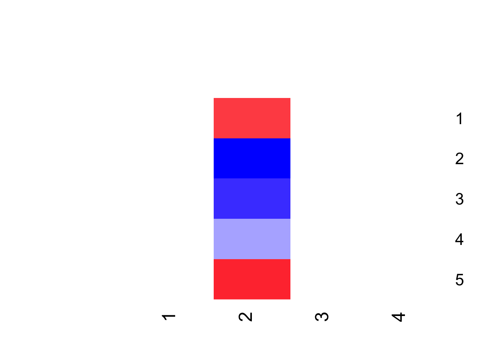

Code
packages <- c("tidyverse","patchwork","rstan")
invisible(lapply(packages, library, character.only = T))Bayesian PCA and Probabilistic PCA are similar methods but known better as one name or the other in statistics or machine learning fields respectively. Bayesian PCA is used to model latent variable in hierarchical settings by drawing samples from the posterior distribution iteratively. The benefit of this method, in addition to data reduction via PCA, are two things: (1) it allows for probabilistic inference about latent variable within the data, (2) and the selection of the best components are baked into the model which can not otherwise be done using MLE or EM estimation methods. First, let us start with an overview of PCA
The goal of Principal Component Analysis (PCA) is to solely use the data to determine principal components to transform the data as a summary within lower-dimentional space. The variance of the principal components explain the full variance of the data and are often ordered by their standard deviation ultimately used to determine the number of components to retain during the reduction step. Data reduction has the consequence of information loss, but the gain of lower model complexity.
One way the principal components are found are by applying the spectral decomposition method. There are 3 meaningful properties to note here which are:
(1) Since the variance covariance matrix is symmetric and positive semi-definite it can be decomposed as the following:
\[ Var(X)=Z^TDZ = \begin{bmatrix}z_{11}&..&z_{1p}\\ .&.&.\\z_{n1} &.&z_{np} \end{bmatrix} ^T\begin{bmatrix}\lambda_1\\&.\\&&\lambda_p \end{bmatrix} \begin{bmatrix}z_{11}&..&z_{1p}\\ .&.&.\\z_{n1} &.&z_{np} \end{bmatrix} \]
(2) the eiganvalues of the data are the variances of the principal components \(B\),
\[ \begin{align} Var(B) &=ZVar(X)Z^T \\&= Z(Z^TDZ)Z^T \\ &=D \end{align} \]
\[ B = ZX\\or\\X=ZB \]
Notice this does not require any probabilistic approach and is purely mathematical.
In the PCA and social science literature, \(q<p\) is usually used and the PC’s that explains the most variance in the data are retained. That is, if we ordered the \(q\) PC’s by size of the \(\lambda 's\), indexing them by \(j\), then for \(q =3\); \(\lambda_{j=1}>\lambda_{j=2}>\lambda_{j=3}\). Given this is a deterministic method, if \(q = p\) then all the variance of the data would be explained, thus no data reduction/information lost. This data reduction is achieved by choosing a smaller set of principal components \(B_q\) and eigenvectors \(Z_q\) to approximate \(X\) effectively not using all of the rows of \(B\). That is:
\[ X_{nxp} \approx \tilde X_{nxp} = Z_{nxq}B_{qxp}, q<p \]
Essentially, assuming the data was not standardized, for each subject \(i\) all of their covariate data can be linearly represented as,
\[x_i=\beta z_i+\mu_p\]
or more descriptively for all data observations,
\[ \begin{bmatrix}x_{11}&..&..&x_{1p}\\.&. & &.\\.& &. &.\\x_n &.&.&x_{np} \end{bmatrix} =\begin{bmatrix} z_{11}&.. & z_{1q}\\.&.&.\\z_{n1}&..&z_{nq} \end{bmatrix}\begin{bmatrix}B_{11}&..&..&B_{1p}\\.&.&&.\\.& &.&.\\B_{q1}&.&.&B_{qp} \end{bmatrix}+\begin{bmatrix}\mu_1\\\mu_2\\.\\.\\\mu_p \end{bmatrix} \]
However, in standard practice the covariates are all standardized before deriving the PC’s. Essentially, various sets of the Principal components can then be further used to predict a measure of interest.
Here’s an example retrieving all the covariate information for subject 1. If there are 2 covariates, then there are 2 PC’s and we assume \(q=p\) then for subject 1,
\[ \begin{bmatrix}x_{11} & x_{12} \end{bmatrix} = \begin{bmatrix}z_{11}B_{11}+z_{12}B_{21}& z_{11}B_{12}+z_{12}B_{22} \end{bmatrix} \]
Likewise for subject 2, but with \(q = 1\), then
\[ \begin{bmatrix}x_{21} & x_{22} \end{bmatrix} \approx \begin{bmatrix}z_{21}B_{11} & z_{21}*B_{12} \end{bmatrix} \]
To find the acutal principal components \(B\), singular value decomposistion is used to determine Ultimately, PCA is used to reduce the dimensions of the dataset which allows for a less complex model at the expense of information loss. However, this method can not handle missing data, and is subject to outliers influencing the rotation of the PC’s.
How can we take a probabilistic approach to this and why would we want to? Well, researchers are interested in finding, in probability, the components that explain the most variance so that one can study their latent effects. At the inception of these methods the computational power did not exist and thus lead the discourse to find alternative estimations methods for the marginal versions of the probabilistic model. However, we now have the computational power to retain the full joint posterior of the parameters. The PPCA/Bayesian PCA section will explain the method in detail.
Historically, Factor Analysis (FA) was very similar to PCA with the slight diffence that an error term was introduced into the model having a covariance matrix that allowed for comparritive error accross individual observations. This was a step closer to a probabilistic framework but not quiet because the principal components or factors derived from the covariance matrix were forced to be orthogonal using SVD methods as in PCA. These factors to, summarize the data in a lower-dimensional space however allow for a distribution on the latent scores that multiply the facotors. Additionaly, the number of factors are often predefined based on data assumptions. For example, if our data set contained covariates associated with social economic status, and transportation, the factor analytical approach would assume the data could be summarized with 2 components. But, should there be an additional factor that has an eigenvalue greater than 1 then it could be considered that there is an unnamed factor that explains an important structural aspect of the data. In conclusion, both PCA and FA are exploratory methods and lack probabilistic properties necessary for statistical inference. Furthermore, more contemporary implementations of FA retain probabilistic properties by reason of spectral decomposition providing the gaussian approach, and thus assuming a distribution on the factors and latent variables they emerge orthogonal which is necessary to map this latent components back to the observed variables. This is better explained in the next section.
This section will first explain the notation used for Probabilistic Principal Component Analysis (PPCA). PPCA is similar in nature if not identical to FA, but the difference only appears for the structure of the covariance matrix of the error terms. FA assumes unique error and thus the off diagonals of the error terms’s covariance matrix are greater than 0 while for PPCA’s they are 0. That is why it has the flavor of PCA, extending it in a probabilistic setting. Like FA, using reasoning from spectral decomposition, the model then minimizes \(||x-zB-\mu||=||\epsilon \epsilon^T||\). According to PCA literature it is standard practice to standardize the covariates as z scores. Thus, it is safe to assume a standard multivariate normal distribution if the data is normalized.
\[x_i=\beta z_i+\mu_p+\epsilon_i \\ \mu \sim N(0, \bf I_p) \\ \epsilon\sim N(\bf0,\sigma^2\bf I_p) \]
or more descriptively,
\[ \begin{bmatrix}x_{11}&..&..&x_{1p}\\.&. & &.\\.& &. &.\\x_n &.&.&x_{np} \end{bmatrix} =\begin{bmatrix} z_{11}&.. & z_{1q}\\.&.&.\\z_{n1}&.. &z_{nq} \end{bmatrix}\begin{bmatrix}B_{11}&..&..&B_{1p}\\.&.&&.\\.& &.&.\\B_{q1}&.&.&B_{qp} \end{bmatrix}+\begin{bmatrix}\mu_1&\mu_2&..\mu_p \end{bmatrix}+\begin{bmatrix} \epsilon_1\\\epsilon_2\\.\\.\\ \epsilon_n \end{bmatrix} \]
Given nature of PCA is to minimize the sum of squared error, the distribution assumed for \(z\) is forced to be orthogonal. We assume the following distributions on the additional parameters and data.
\[\begin{align} x_i &\sim N(\mu, \beta \beta^T+\sigma^2 \bf I_p), \mu \sim N(0, \bf I_p)\\ x_i | z_i &\sim N(\beta z_i,\sigma^2 \bf I_p)\\ z_i &\sim N(\bf 0,I_q)\\ \beta_q | \lambda_q &\sim N(\bf 0,\lambda^{-1}_q *\bf I_p)\\ \lambda &\sim Gam(a,b) \end{align}\]
Note: \(\lambda's\) are eigenvalues of the variance of the data which are often used to determine the most important principal components. Also, the covariance matrix of \(\epsilon\) is a diagonol matrix marks the distinction from Factor Analysis. Last, orthogonality imerges as of a result of the Gaussian process induced by reason of spectral decomposition.
This section simulates data based on previous distributions within a Bayesian framework. Baye’s method allows us to model the posterior distribution by drawing samples from a proportional prior distribution. Typically in practice the number of components retained are either the PC with the largest eigenvalue as in typically social science literature, or for factor analysis purposes, the PC’s with eigenvalues greater than 1. In the Bayesian framework by setting a prior on the PC’s variance we can allow the model to choose the best PC’s to retain as they are shrunken if the variance explained is very small. The goal is to estimate the following posterior distribution.
\[ P(z,\beta,\mu,\lambda,\sigma^2|x) \propto P(x|\beta, z,\mu,\lambda, \sigma^2)P(z)P(\beta|\lambda)P(\mu)P(\sigma^2)P(\lambda)\]
Note: Factor analysis transformed over the years naturally into a probabilistic approach to data reduction since it was more inherently a statistical method with the goal to become inferential while PCA remained more of a machine learning method with the goal of prediction.
Bayesian methods became more popular as computational capacity increased and thus PPCA, Bayesian FA, or Bayesian PCA are virtually synonymous with the emphasis that Bayesian methods are used to estimate the parameters. FA already became probabilistic, and like PPCA, maximum likelihood, or EM algorithm methods were used to estimate the parameters. Since unique error is used for FA there were no closed form solutions for parameters in FA so the EM algorithm was preferred. Also, while computational capacity have been exponentially increasing, the complexity of Bayesian estimation forced researchers to take marginalized approaches to estimating the posterior as opposed to allowing the model to estimate the joint distribution of all the parameters. In the next section, I take advantage of contemporary computing capacity, and Bayesian estimation methods to build a PPC model and analyze the results.
We apply a Bayesian framework to model to determine the conditional probabilities, and lastly, using variational and MCMC methods to produce estimates for the data using Stan.
Variational estimation is …
packages <- c("tidyverse","patchwork","rstan")
invisible(lapply(packages, library, character.only = T))Simulating the data
`%>%` <- dplyr::`%>%`
a= 1 # alpha for prior on the PC's
b= 1 # beta for the prior on PC's
N <- 2000 # number of subjects
p <- 5 # number of covariates
q <- 4 # number from reduced dim
lambda = rgamma(1,shape =a,rate = b) # hyper prior for PC's
B = matrix(rnorm(p*q,mean = 0, sd = 1/sqrt(lambda)), ncol = q) # PC Vectors
z = matrix(rnorm(N*q,mean = 0, sd = 1), ncol = q)
x <- matrix(nrow = N, ncol = p)
for (i in 1:p) {
x[,i] = sum(B[i,]*z) + rnorm(N,0,1)
}Setting up Stan code
stan_list <- list(
N = N,
a = a,
b = b,
x = x,
p = p,
q= q
)
mod_file <- rstan::stan_model("bayes_stan.stan")
fit <- rstan::vb(mod_file,
data = stan_list#,
# pars = c("preds","B","z")
)
output_tab <- rstan::summary(fit) %>%
data.frame() %>%
rownames_to_column() B.vb <- apply(extract(fit,"B")[[1]], c(2,3), mean)
z.vb <- apply(extract(fit,"z")[[1]], c(2,3), mean)
mu.vb <- apply(extract(fit,"mu")[[1]], c(2), mean)
lambda.vb <- apply(extract(fit,"lambda")[[1]], c(2), mean)
gplots::heatmap.2(B.vb, col = gplots::bluered(70), dendrogram='none',trace='none', Rowv = FALSE, Colv = FALSE, key=FALSE)
gplots::heatmap.2(z.vb, col = gplots::bluered(70), dendrogram='none',trace='none', Rowv = FALSE, Colv = FALSE, key=FALSE)Comparing x to the predicted values
# pred matrix
x_pred <-
cbind(output_tab$summary.mean[grepl(c("preds"),output_tab$rowname)][1:100],
output_tab$summary.mean[grepl(c("preds"),output_tab$rowname)][101:200],
output_tab$summary.mean[grepl(c("preds"),output_tab$rowname)][201:300],
output_tab$summary.mean[grepl(c("preds"),output_tab$rowname)][301:400],
output_tab$summary.mean[grepl(c("preds"),output_tab$rowname)][401:500])
# creating combine variables
x_comp <- full_join(
x %>%
as.data.frame() %>%
mutate(name = "actual")# %>%
#mutate_at(vars(V1:V5),~scale(.,scale = T))
,
x_pred %>%
as.data.frame() %>%
mutate(name = "predicted")) %>%
pivot_longer(
V1:V5,
names_to = "covariates",
values_to = "observations"
)
# plot of distribution
x_comp %>%
# filter(name == "actual") %>%
# filter(name == "predicted") %>%
ggplot(aes(x = observations, fill = name, col = name))+
#geom_histogram(alpha = 0.3)+
geom_density(alpha = 0.1)+
facet_wrap(~covariates)Table of means for each covariate.
x_comp %>%
group_by(name, covariates) %>%
summarize(mean = mean(observations)) %>% knitr::kable()| name | covariates | mean |
|---|---|---|
| actual | V1 | -24.214990 |
| actual | V2 | 36.204404 |
| actual | V3 | 24.967718 |
| actual | V4 | 11.360905 |
| actual | V5 | -27.051076 |
| predicted | V1 | 4.247625 |
| predicted | V2 | 4.292831 |
| predicted | V3 | 4.255558 |
| predicted | V4 | 4.285514 |
| predicted | V5 | 4.276693 |
# z compared to predicted z
z_pred <- cbind(output_tab$summary.mean[grepl(c("z"),output_tab$rowname)][1:100],
output_tab$summary.mean[grepl(c("z"),output_tab$rowname)][101:200],
output_tab$summary.mean[grepl(c("z"),output_tab$rowname)][201:300],
output_tab$summary.mean[grepl(c("z"),output_tab$rowname)][301:400])
# creating combine variables
z_comp <- full_join(
z %>%
as.data.frame() %>%
mutate(name = "actual")# %>%
#mutate_at(vars(V1:V5),~scale(.,scale = T))
,
z_pred %>%
as.data.frame() %>%
mutate(name = "predicted") #%>%
#rename("V1"=".")
) %>%
pivot_longer(
V1:V4,
names_to = "latent",
values_to = "observations"
)
# plot of distribution
z_comp %>%
# filter(name == "actual") %>%
# filter(name == "predicted") %>%
ggplot(aes(x = observations, fill = name, col = name))+
#geom_histogram(alpha = 0.3)+
geom_density(alpha = 0.1)+
facet_wrap(~latent)
Since \(q\) is now greater than 1, we are using a ordering function on \(z\). That kind of changes the distribution from a standard normal but a positively ordered standard normal vector of \(q\) scores.
Ordering the \(z\) parameter also helps to map the predicted \(z\) to the actually \(z\) parameter for comparison.
`%>%` <- dplyr::`%>%`
a= 1 # alpha for prior on the PC's
b= 1 # beta for the prior on PC's
N <- 100 # number of subjects
p <- 5 # number of covariates
q <- 2 # number from reduced dim
lambda = rgamma(1,shape =a,rate = b) # hyper prior for PC's
B = matrix(rnorm(p*q,mean = 0, sd = 1/sqrt(lambda)), ncol = q)# PC Vectors
z = matrix(rnorm(N*q,mean = 0, sd = 1), ncol = q)
mu <- rnorm(p,0,1)
x <- matrix(nrow = N, ncol = p)
for (i in 1:p) {
x[,i] = sum(B[i,]*z+mu[i]) + rnorm(N,0,1)
}
stan_list <- list(
N = N,
a = a,
b = b,
mu = mu,
x = x,
p = p,
q= q
)
mod_file <- rstan::stan_model("bayes_stan.stan")
fit <- rstan::vb(mod_file,
data = stan_list#,
# pars = c("preds","B","z")
)
output_tab <- rstan::summary(fit) %>%
data.frame() %>%
rownames_to_column() Comparing x to the predicted values
# pred matrix
x_pred <-
cbind(output_tab$summary.mean[grepl(c("preds"),output_tab$rowname)][1:100],
output_tab$summary.mean[grepl(c("preds"),output_tab$rowname)][101:200],
output_tab$summary.mean[grepl(c("preds"),output_tab$rowname)][201:300],
output_tab$summary.mean[grepl(c("preds"),output_tab$rowname)][301:400],
output_tab$summary.mean[grepl(c("preds"),output_tab$rowname)][401:500])
# creating combine variables
x_comp <- full_join(
x %>%
as.data.frame() %>%
mutate(name = "actual")# %>%
#mutate_at(vars(V1:V5),~scale(.,scale = T))
,
x_pred %>%
as.data.frame() %>%
mutate(name = "predicted")) %>%
pivot_longer(
V1:V5,
names_to = "covariates",
values_to = "observations"
)
# plot of distribution
x_comp %>%
# filter(name == "actual") %>%
# filter(name == "predicted") %>%
ggplot(aes(x = observations, fill = name, col = name))+
#geom_histogram(alpha = 0.3)+
geom_density(alpha = 0.1)+
facet_wrap(~covariates)Table of means for each covariate.
x_comp %>%
group_by(name, covariates) %>%
summarize(mean = mean(observations)) %>% knitr::kable()
z_pred <- cbind(output_tab$summary.mean[grepl(c("z"),output_tab$rowname)][1:100],
output_tab$summary.mean[grepl(c("z"),output_tab$rowname)][101:200])
# creating combine variables
z_comp <- full_join(
z %>%
as.data.frame() %>%
mutate(name = "actual")# %>%
#mutate_at(vars(V1:V5),~scale(.,scale = T))
,
z_pred %>%
as.data.frame() %>%
mutate(name = "predicted")) %>%
pivot_longer(
V1:V2,
names_to = "latent",
values_to = "observations"
)
# plot of distribution
z_comp %>%
# filter(name == "actual") %>%
# filter(name == "predicted") %>%
ggplot(aes(x = observations, fill = name, col = name))+
#geom_histogram(alpha = 0.3)+
geom_density(alpha = 0.1)+
facet_wrap(~latent)This tab looks at the min amount of data reduction for this dataset.
The \(z\) parameters are still ordered
Comparing x to the predicted values
Table of means for each covariate.